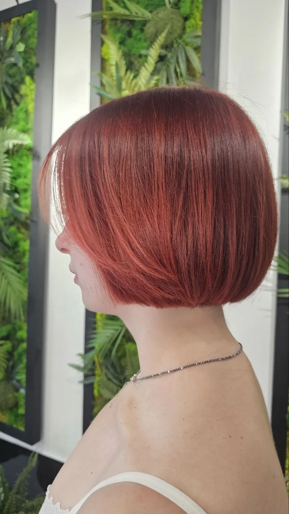
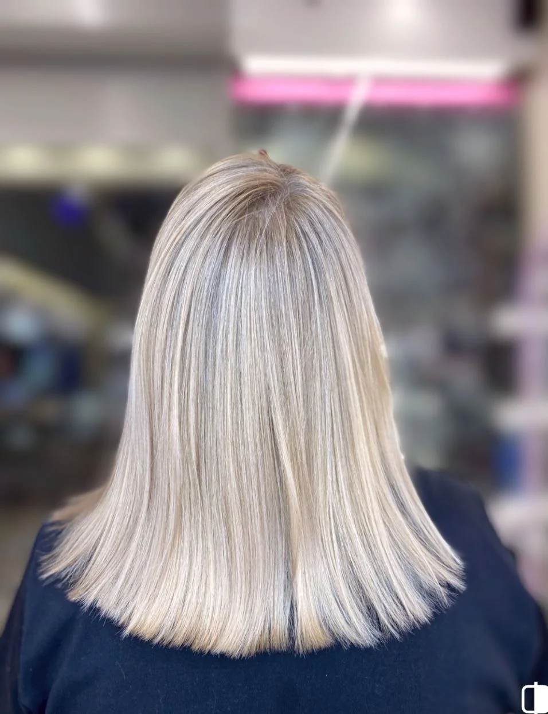
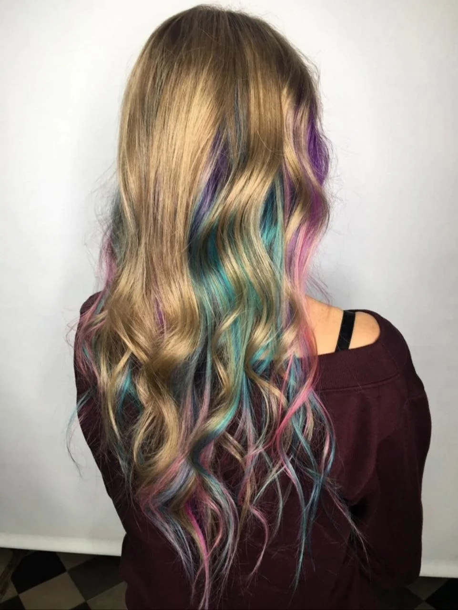

Здоровье волос
Красивый результат невозможен без качественного ухода. Подбираю решение с учётом состояния ваших волос.
ВАШ HAIR-СТИЛИСТ
Стрижки, в которых легко быть собой. Окрашивания, которые подчёркивают индивидуальность. И забота о здоровье волос — в каждой детали.



ЗНАКОМСТВО
Меня зовут Альбина Думбровская. Я hair-стилист, для которого красота начинается со здоровья волос и уважения к вашей индивидуальности.
Мой путь начался в 2014 году с работы ассистентом в салоне премиального уровня. С тех пор я постоянно учусь у ведущих мастеров индустрии и совершенствую техники стрижек и окрашивания.
Моя специализация — точные стрижки и естественные окрашивания. Люблю создавать формы, которые красиво отрастают и легко укладываются без лишних усилий.
Мой подход к работеФИЛОСОФИЯ
02 / MY PHILOSOPHYВ хорошей стрижке нет случайных линий. В красивом окрашивании нет компромисса со здоровьем волос.
Красивый результат невозможен без качественного ухода. Подбираю решение с учётом состояния ваших волос.
Работаю в технике точных стрижек: форма сохраняет красоту по мере отрастания и легко укладывается.
Выбираю мягкие переходы и оттенки, которые подчёркивают внешность, а не спорят с ней.
ПОРТФОЛИО
03 / SELECTED WORKSРеальные работы. Разные характеры, текстуры и оттенки — индивидуальный подход к каждой форме.
12 / РАБОТ
ВИДЕОРАБОТЫ
INSTAGRAM / REELSПосмотрите мои работы в видео — и загляните в Instagram за новыми образами.
«Стрижка должна украшать,
а не требовать усилий каждый день».
УСЛУГИ И СТОИМОСТЬ
04 / SERVICE MENUПрозрачный прайс и внимание к деталям. Окончательная стоимость окрашивания зависит от длины, густоты и состояния волос.
Цены указаны в рублях. Стоимость окрашивания зависит от длины и густоты волос; окончательная цена уточняется на консультации.
ДАВАЙТЕ ЗНАКОМИТЬСЯ
Расскажите, что хочется изменить. Помогу выбрать стрижку, оттенок или уход, который будет именно вашим.